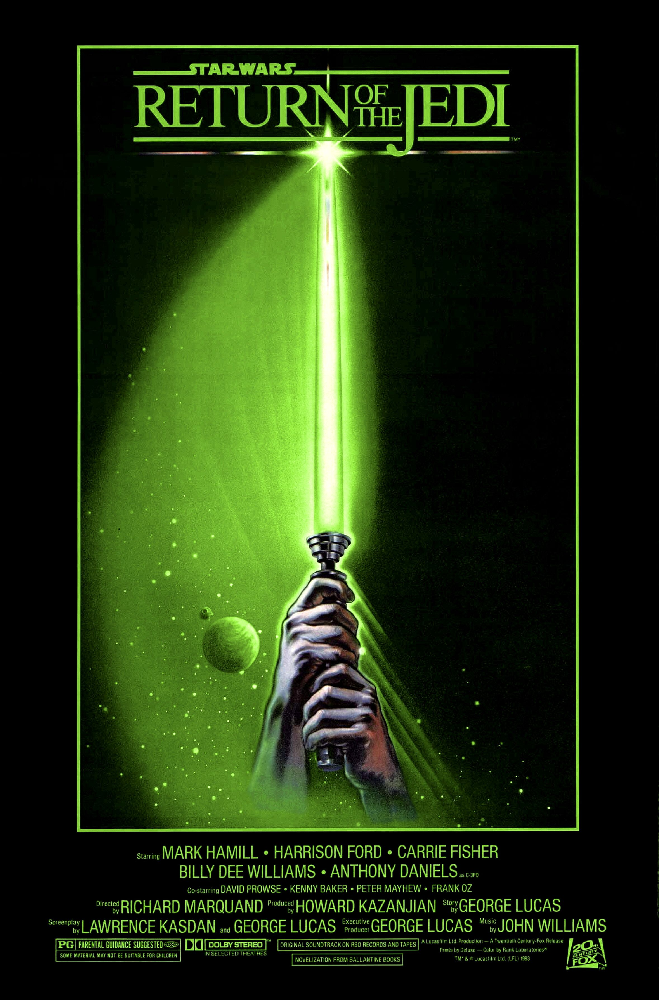

В Галактике продолжается гражданская война между Альянсом повстанцев и войсками Галактической Империи. Империя строит новую космическую станцию — вторую «Звезду Смерти». Для контроля за завершающими этапами на станцию прибывает Дарт Вейдер, тёмный владыка ситхов и лучший силовик Империи.
В это время Люк Скайуокер вместе со своими друзьями — принцессой Леей, Лэндо Калриссианом, Чубаккой, а также дроидами C-4PO и R2-D2 — летит на планету Татуин, чтобы спасти Хана Соло, который находится в замороженном виде у главаря местных гангстеров — Джаббы Хатта. Замаскированная под охотника за головами, Лея пробирается во дворец Джаббы и размораживает капитана Соло. Однако, бегство не удаётся, и она попадает в рабство, а Хана сажают в тюремную камеру вместе с Чубаккой. После этого к Джаббе приходит Люк и позволяет, чтобы его тоже захватили в плен. Люк побеждает ранкора — монстра Джаббы Хатта, которому тот сбрасывал своих врагов. Люк и Хан приговариваются быть съеденными сарлакком, гигантским песчаным червём. Но Скайуокеру удаётся освободиться, вспыхивает нешуточная перестрелка, во время которой Лея душит Джаббу до смертельного исхода, а Хан сталкивает Бобу Фетта в пасть сарлакку. Справившись с Джаббой и освободив Соло, друзья покидают планету.
Пути героев временно расходятся — все, кроме Люка, летят в систему Салласт, у которой собран огромный повстанческий флот, а Скайуокер возвращается на Дагобу к магистру Йоде, чтобы закончить обучение и стать полноправным рыцарем-джедаем нового поколения. Однако, Йода стал слишком слаб и умирает от старости. Перед смертью он успевает сказать Люку, что тот прошёл курс обучения, но истинным джедаем станет, лишь сразившись с Вейдером. Йода подтверждает, что Дарт Вейдер, когда-то известный как Энакин Скайуокер, действительно является отцом Люка. Также он упоминает, что есть ещё один Скайуокер. После его смерти появляется дух Оби-Вана Кеноби, который подтверждает догадки Люка о том, что «ещё один Скайуокер» — это его сестра-близнец Лея Органа, тоже чувствительная к Силе и может стать джедаем. Оби-Ван говорит Люку, что для победы над Империей ему предстоит ещё раз сразиться с Вейдером и советует ему на время затаить свои чувства, чтобы они не сыграли на руку Императору.
На недостроенную станцию прибывает Палпатин в целях личного наблюдения за финальной стадией её строительства. Повстанцы приступают к реализации плана по уничтожению «Звезды Смерти», пока она лишена основных систем вооружения. Для атаки на станцию необходимо отключить защитное силовое поле, генератор которого находится на поверхности лесистой луны Эндора. Проникнуть туда решено с помощью захваченного имперского шаттла, компьютер которого хранит секретный имперский код, без которого нельзя приблизиться к «Звезде Смерти». Управление шаттлом берут на себя Чубакка и Соло. Люк и Лея также отправляются с ними. Во время пролёта мимо станции Люк чувствует Вейдера, который в свою очередь чувствует присутствие Люка в шаттле, но пропускает его, зная о приготовленной для них ловушке.
В лесах луны Эндора элитная ударная группа повстанцев сталкивается с эвоками — маленькими разумными обитателями, похожими на медвежат. Уровень развития эвоков примерно соответствует земному каменному веку. Первоначальный конфликт в итоге превратился в сотрудничество против Империи. Там же Люк открывает принцессе Лее, что она его сестра, и что он должен лететь, чтобы встретиться с их отцом — Дартом Вейдером. Скайуокер сдаётся имперским войскам, которые приводят его к Вейдеру. Люк безуспешно пытается убедить отца отречься от тёмной стороны Силы и встать на сторону добра. Вейдер забирает Люка на «Звезду Смерти», чтобы передать Императору для обращения на тёмную сторону. Скайуокер узнаёт, что его друзей ждёт засада, в которой собраны лучшие штурмовики Империи — элитные части 501-го Легиона. Щит отключить не удалось, а флот повстанцев оказывается под обстрелом «Звезды Смерти», орудийные системы которой оказались действующими.
Император искушает Люка поддаться гневу и перейти на тёмную сторону Силы, но тот отказывается. Вейдер узнаёт, что Лея является сестрой Люка, и с торжеством объявляет, что если Люк не перейдёт на тёмную сторону, то это сделает она. Люк впадает в гнев от этих слов и не желая допустить подобного расклада нападает на Вейдера, валит его с ног и отрубает ему руку-протез. Увидев это, он понимает, что гнев может привести его на место отца. Император просит Люка убить Вейдера и занять его место в качестве ситха-воина, но Люк отказывается, говоря Дарту Сидиусу, что он — джедай, каким был его отец, и никогда не перейдёт на тёмную сторону. В это время в космическом пространстве повстанцы от безысходности нападают на имперский флот, чтобы удержать «Звезду Смерти» от залпа суперлазером, которым можно было задеть и своих. Ситуацию спасают обитатели планеты Эндор, которые решили воспользоваться моментом для мести за порабощение своих земель Империей. Чубакка вместе с эвоками захватывает один имперский шагоход AT-ST и уничтожает остальные. Хан и Лея уничтожают генератор защитного поля для «Звезды Смерти» и лишают станцию защиты. Окрылённые таким успехом Лэндо Калриссиан и его истребительная армада направляется к главному реактору станции.
На «Звезде Смерти» Император пытается убить Люка при помощи коронного приёма Тёмной стороны — молний. Но Дарт Вейдер, не желая видеть гибель своего сына от рук беспощадного ситха, возвращается на светлую сторону Силы как Энакин Скайуокер и нападает на Императора. Прорываясь сквозь поток смертельных молний Силы, испускаемых сопротивляющимся ситхом, Энакин проносит Палпатина у себя над головой и сбрасывает в вентиляционную шахту, ведущую к реактору «Звезды Смерти», где его физическая оболочка взрывается в потоке тёмной энергии. Тем самым исполняется древнее пророчество, согласно которому Энакину было суждено вернуть баланс в Силе. Энакин смертельно ранен молнией Сидиуса. Умирая, он просит Люка снять маску, чтобы в первый и последний раз взглянуть на сына своими глазами. Люку впервые открывается бледное и измождённое лицо отца, обнажая шрамы, оставшиеся после великой дуэли с Оби-Ваном Кеноби на Мустафаре. Перед тем, как стать единым с Силой, Энакин признаётся Люку, что тот был прав насчёт него и просит передать Лее, что он был прав. Со смертью Шива Палпатина и возвращением Энакина Скайуокера на светлую сторону, Орден Ситхов, тысячелетие существовавший в режиме «только двое — учитель и его ученик», полностью разваливается.
А в это же самое время Лэндо Калриссиан на «Соколе Тысячелетия» достигает ядра станции и разрушает главный реактор. Необратимая реакция запущена и повстанцы отходят на безопасное расстояние перед взрывом. Люк успевает сбежать со станции на имперском шаттле типа «Лямбда» с телом своего отца. Повстанческое движение побеждает в Эндорской битве и с гибелью последней «Звезды Смерти» Галактическая Империя терпит сокрушительное поражение. Люк, следуя джедайским обычаям, кремирует тело отца на погребальном костре, во всей Галактике празднуют великую победу над Империей (на Корусанте видно как ликующие жители на Площади Монументов сбрасывают штурмовиков и сносят статую Императора). Лея и Хан объясняются в любви, а перед Люком Скайуокером появляются призраки Йоды, Оби-Вана и искупившего вину Энакина Скайуокера в образе молодого джедая, каким он был до падения на тёмную сторону Силы. Лея берёт Люка за руку и уводит его от образов, чтобы присоединиться к своим друзьям и коллегам на празднике великой победы над злом.
Источник: Wikipedia